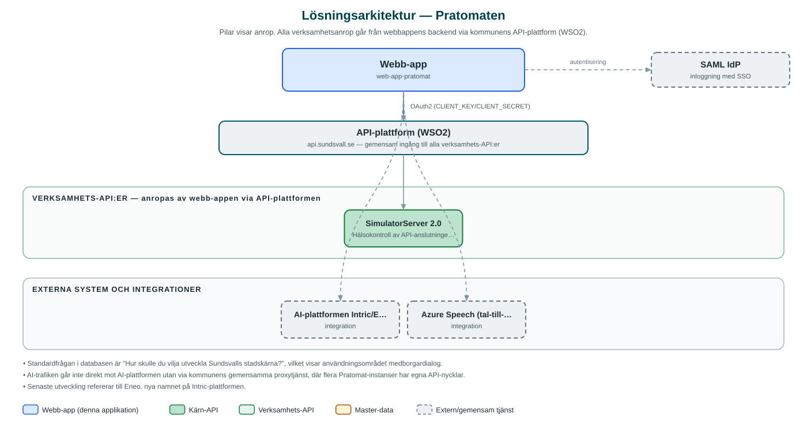

Pratomaten
Röststyrd AI-assistent som samlar in förslag, önskemål och synpunkter från allmänheten, till exempel vid evenemang.
Om applikationen
Pratomaten är en dialogtjänst där besökare, exempelvis vid evenemang eller i det offentliga rummet, kan svara på en öppen fråga som "Hur skulle du vilja utveckla Sundsvalls stadskärna?". Besökaren kan prata med assistenten via mikrofon eller skriva, och en AI-assistent följer upp svaren i en chattkonversation.
Svaren sammanställs och sparas som slutfrågor och svar i en databas, så att verksamheten kan ta del av vad deltagarna tyckt. Flera Pratomater kan köras samtidigt med olika frågor, texter och färgteman.
Till tjänsten hör ett administrationsgränssnitt där medarbetare skapar och hanterar Pratomater, kopplar dem till en AI-assistent och väljer om de ska publiceras. AI-funktionerna körs via kommunens proxytjänst mot AI-plattformen Intric/Eneo.
Det här stödjer applikationen
- Röst- och textdialog – Besökare kan tala in sina svar via tal-till-text eller skriva i chatten.
- AI-uppföljning – En AI-assistent ställer följdfrågor och för dialogen vidare utifrån besökarens svar.
- Insamling av svar – Slutfrågor och svar sparas i databas för senare analys av verksamheten.
- Flera Pratomater – Varje Pratomat har egen fråga, texter, färgtema och publiceringsstatus.
- Administration – Medarbetare skapar och hanterar Pratomater i ett separat admingränssnitt.
Teknisk dokumentation
Nedan beskrivs hur applikationen är uppbyggd, vilka API:er den använder och vad som krävs för att driftsätta den. Informationen är härledd ur källkoden och dess konfiguration på GitHub.
Arkitektur

Applikationen består av en webbaserad frontend (React med Vite och kommunens designsystem (@sk-web-gui/ai); admin i Next.js/React) och en backend (Node.js med Express och Prisma (databas för Pratomater och svar)) som utvecklas i samma kodbas. Verksamhetsanrop går via kommunens gemensamma API-plattform (WSO2) – frontend pratar aldrig direkt med underliggande system. Övriga integrationer som förekommer i koden: AI-plattformen Intric/Eneo (via kommunens proxytjänst), Azure Speech (tal-till-text via proxytjänsten), SAML IdP (admin).
Teknikstack
- Frontend: React med Vite och kommunens designsystem (@sk-web-gui/ai); admin i Next.js/React
- Backend: Node.js med Express och Prisma (databas för Pratomater och svar)
- Test: Jest (backend) och Cypress (admin)
API-beroenden
Applikationen konsumerar följande API:er via kommunens API-plattform. Versionerna är hämtade ur källkodens API-konfiguration.
| API | Version | Användning |
|---|---|---|
| SimulatorServer | 2.0 | Hälsokontroll av API-anslutningen (enligt api-config). |
Konfiguration och driftsättning
- Miljöfiler för frontend, backend och admin
- INTRIC_SALT för hashverifiering mot proxytjänsten
- SAML-certifikat och nycklar för admininloggning
- Frontend pekas mot både egen backend och AI-proxytjänsten (VITE_INTRIC_API_BASE_URL)
Noterbart ur källkoden
- Standardfrågan i databasen är "Hur skulle du vilja utveckla Sundsvalls stadskärna?", vilket visar användningsområdet medborgardialog.
- AI-trafiken går inte direkt mot AI-plattformen utan via kommunens gemensamma proxytjänst, där flera Pratomat-instanser har egna API-nycklar.
- Senaste utveckling refererar till Eneo, nya namnet på Intric-plattformen.
Källkod
Källkoden är öppen och finns hos Sundsvalls kommun på GitHub. I källkodsförrådet finns även instruktioner för att klona, konfigurera och starta applikationen i egen miljö.